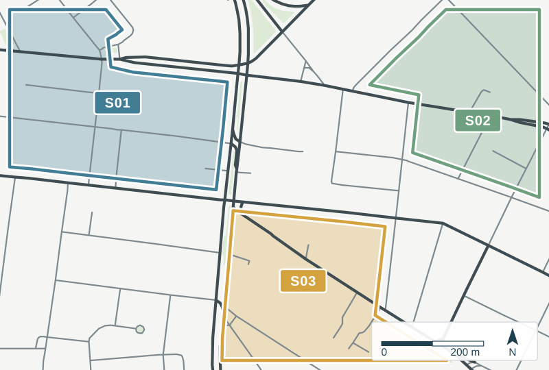
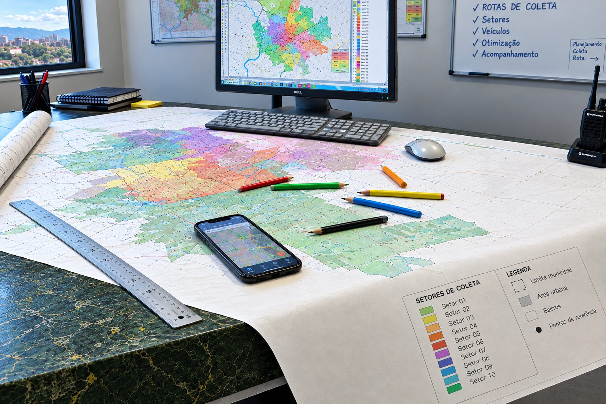
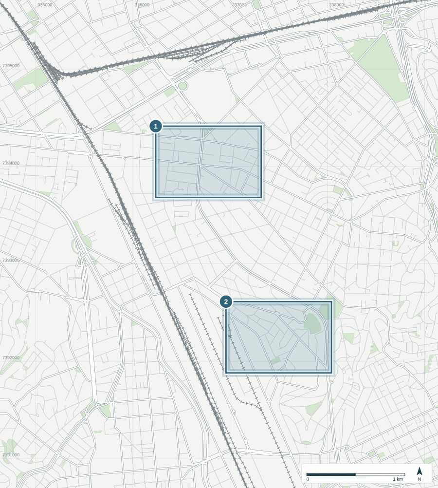
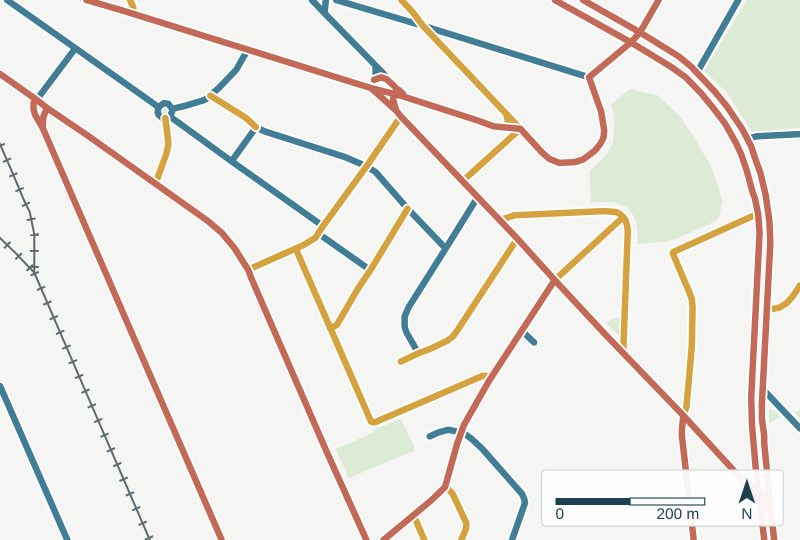
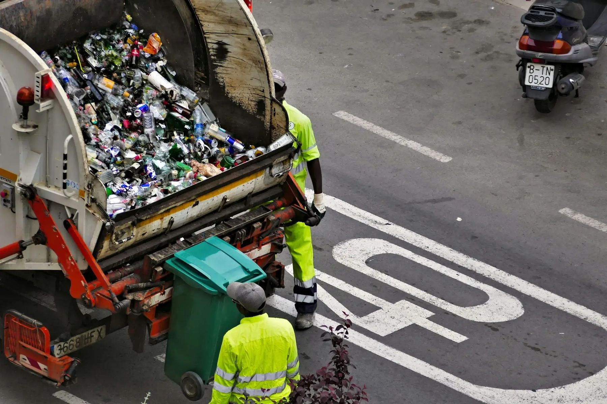

Zoom da área 1
Coleta domiciliar

Setorização: o bairro dividido em setores, cada um com seu dia, horário e equipe.
Foto: Salvador · BA
Consultoria técnica · Limpeza urbana e resíduos sólidos
Setorização, roteirização e dimensionamento de coleta, varrição, capina e roçada, com georreferenciamento e propostas técnicas para municípios e concessionárias.
Quem somos
A Formato atua há mais de três décadas no desenvolvimento de projetos, planejamento e consultoria para a área de limpeza urbana. Desde a fundação, mantém sua sede no mesmo endereço, na Vila Mariana, em São Paulo.
Reunimos profissionais de diferentes áreas para transformar dados e informações do território em planos, metodologias executivas e propostas técnicas consistentes, com apoio de georreferenciamento e produção gráfica especializada.

Serviços
Todo plano começa pelo território. Na Mooca, como em qualquer município, cada rua entra no cálculo: setores de coleta, circuitos de varrição, equipes e frota, até o destino final do resíduo.

Ampliar mapa (abre em nova aba)Zoom da área 1

Setorização: o bairro dividido em setores, cada um com seu dia, horário e equipe.
Zoom da área 2

Das áreas 1 e 2
Exemplo ilustrativoFrota e equipes calculadas para os recortes do mapa.
Destino final
O plano acompanha o resíduo até a destinação final ambientalmente adequada.

Do mapa para a rua: planejamento que vira rotina de coleta, varrição e limpeza.
Áreas de atuação
Gestão de resíduos sólidos.
Elaboração de propostas técnicas.
Apresentação de estudos e projetos.
Como trabalhamos
Coleta e organização das informações do município e dos serviços.
Os dados ganham localização: vias, setores e pontos no mapa.
Dimensionamento de recursos e definição da metodologia operacional.
Planos, propostas e materiais gráficos prontos para apresentação.
Contato
Conte sobre o seu projeto ou município. Retornamos pelo contato informado.